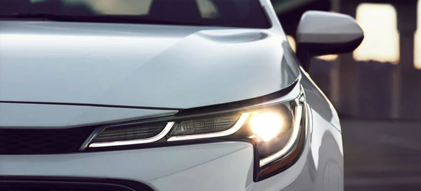

DISEÑOEl diseño del nuevo Corolla apunta a perfeccionar sus características fundamentales como un automóvil, a la vez que proporciona nuevos valores, como una calidad superior y un sentimiento emocional gracias a su deportividad y su elegancia. | |
FAROS DELANTEROSFaros delanteros Bi-Beam LED para las luces bajas, altas y DRL, proyectan a mayor distancia, resultando en mejor visibilidad; eficiencia mejorada e iluminación distintiva. Además la lámpara cuenta con luz LED para luces medias con su nuevo diseño “triple J-shaped” dándole ese toque distintivo al Corolla. |
|
DISEÑO FRONTALDiseño deportivo delantero con sensación de gran amplitud y sensación de estabilidad; la parrilla superior en combinación con la malla y el marco de la parrilla inferior y los faros en forma de flecha que están conectados en una forma delgada, expresan un frente delantero superior ancho, deportivo y dinámico. | |
FAROS TRASEROSLos faros traseros con luces LED se alinean perfectamente con la cintura del vehículo, resultando en un diseño audaz y deportivo. La tercera Luz LED de frenos bien ubicada en el vidrio trasero brinda toda la seguridad en la conducción. |
|
INTERIOREl interior del vehículo mantiene la premisa de "Espacio de cabina con sensación abierta", lo cual se expresa a través de formas claras y audaces. El tablero está compuesto por grandes zonas, enfatizadas en formas horizontales. Con esto denota un aire deportivo, mientras que sus superficies y acabados imponentes. |
|
DESEMPEÑOEl flujo suave de potencia, la respuesta rápida y el manejo ágil generan un rendimiento estimulante con una ventaja deportiva, intensificando el placer de conducción del Toyota Corolla. |
|
TRANSMISIÓNSegún su versión, el Corolla está disponible con transmisión automática conocida como Transmisión Continuamente Variable (CVT, por sus siglas en inglés); y transmisión mecánica. La transmisión CVT utiliza una serie de poleas para el funcionamiento automático, dicha transmisión cuenta con la opción manual de 7 cambios, resultando en una excelente sensación de conducción y economía de combustible. |
|
SUSPENSIONzEn el Corolla, tanto en su versión híbrida como solo gasolina gozan de una mayor sensación de control, haciendo que tomar cada curva sea segura a cualquier velocidad gracias a la optimización de los resortes y amortiguadores brindando absorción mejorada, cabe mencionar que la suspensión delantera es de tipo MacPherson y la nueva suspensión trasera es de barra multibrazo logra un excelente balance entre estabilidad y confort. |
|
MODOS DE MANEJOTransmisión mecánica en gasolina: Disfruta de la tradicional y confortable conducción del Corolla con transmisión mecánica y su motor de gasolina. Transmisión automática en híbrido auto recargable: Además, el liderazgo de la tecnología híbrida de Toyota en la industria se ha caracterizado por su confiable tren de tracción híbrido que ahora forma parte del vehículo más vendido del mundo. Además del modo tradicional de su motor de gasolina, el modo híbrido del nuevo Corolla se desarrolló para experimentar el aumento de respuesta de aceleración y obtener un manejo más emocionante. Una respuesta rápida con manejo ágil. |
|
SEGURIDADEl equipamiento de seguridad del Toyota Corolla te ayudará a sentir la tranquilidad de conducir protegido. |
|
SAFETY SENSESegún su versión *1, el Corolla está equipado con un novedoso sistema de seguridad llamado Toyota Safety Sense el cual se viene a sumar al conjunto de sistemas que ayudan a reducir las probabilidades de tener un accidente *2, el nuevo Corolla cuenta con 4 sistemas desarrollados para nuestra región que son:
|